Page Poll Redesign
OVERVIEW
This case study explores the redesign of the Page Poll component on the Services Australia website to better support both user feedback and data analysis.
Note: consent to share this information for the portfolio case study has been obtained.
MY ROLE
UI/UX Design
Research
Ideation
TEAM
Senior Designer
Data Analyst
UX Researchers
Developers
Team Director
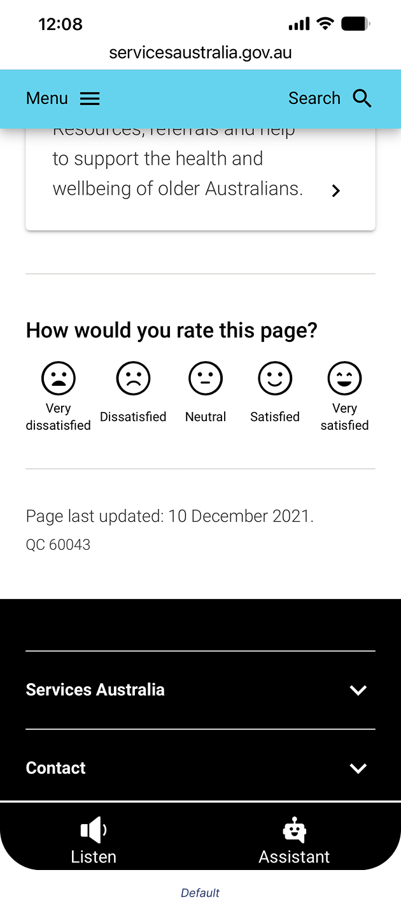
Default

Pressed

Confirmed Submission
The problem
The existing Page poll is overly simplistic and binary, limiting its ability to capture meaningful feedback. The new design should aim to reduce cognitive load and capture more nuanced feedback. It should also be adaptable to various content types and page contexts.
Key pain points
-

Binary responses limited nuance
-
Feedback was difficult to interpret and analyse
-
Insights were not actionable for content improvement
Baseline:

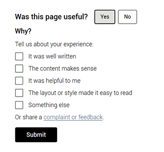
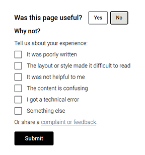
How might we redesign the Page Poll to be intuitive for users while enabling more nuanced, actionable feedback for analysis and continuous improvement of web content?
The design process

Research
The core research for this project was based on the Services Australia website analytics and desktop analysis. I analysed examples of page polls elsewhere in different sectors such as retail, along with different types of sentiment scales. I annotated them to draw insights into how they might inform the new design.

Screenshots of desktop analysis
Insights
-
•
Binary responses provided limited insight into user sentiment, highlighting the need for a more nuanced feedback scale.
-
•
Feedback options were often accompanied by a free text field, but was omitted due to project constraints.
-
•
Overlay-based feedback patterns and redirects were common, but could introduce additional interaction steps.
-
•
Feedback needed to capture sentiment specifically in relation to the current page.
Prototyping
Exploration
Early exploration looked at high fidelity potential sentiment scales and design patterns. We also explored progressive disclosure for additional feedback options.
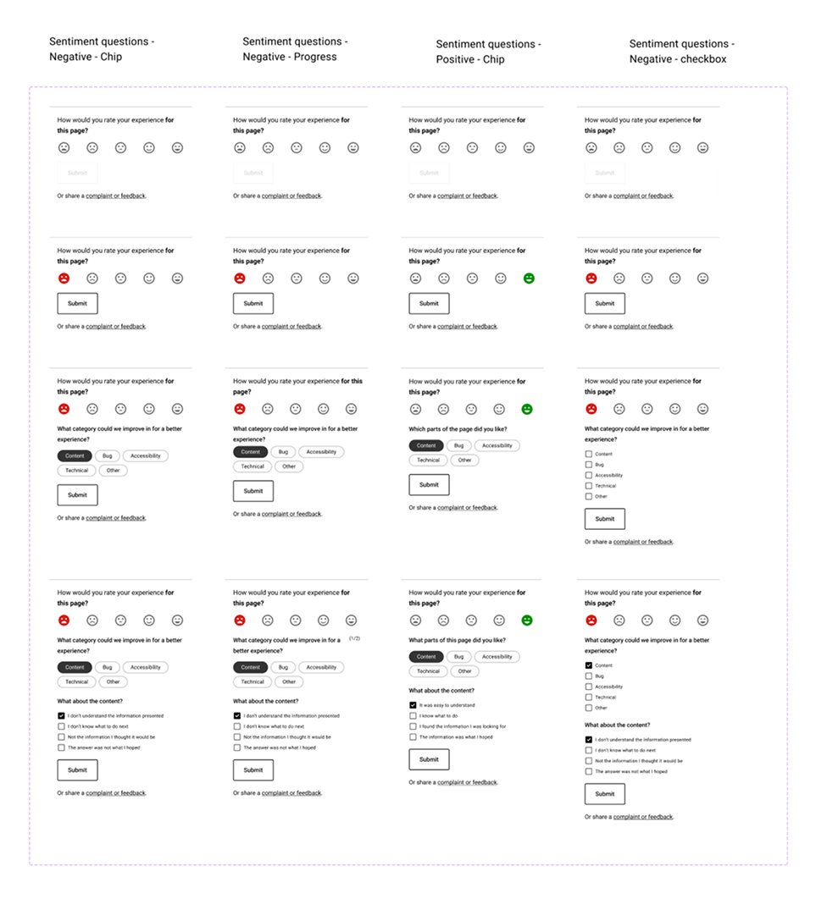
Early emoji exploration
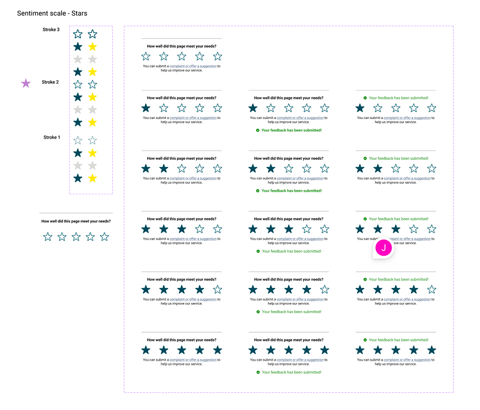
Star sentiment scale
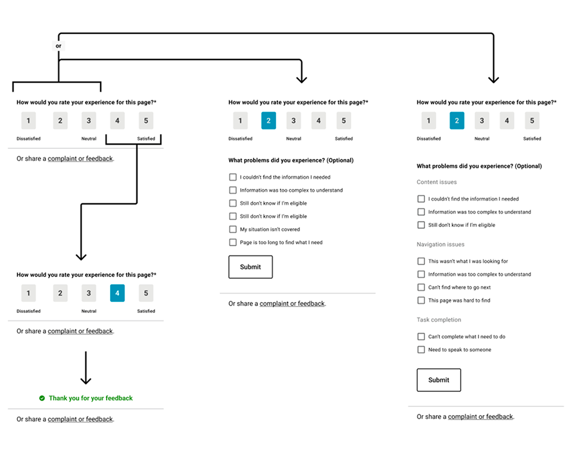
Progressive disclosure ideas
Review and refinement
Round 1 ‐ Establishing the feedback experience
-
•
Complaints and feedback link was too prominent when displayed along a sentiment scale. Decided to reveal it only after interaction.
-
•
Use the emoji scale since it is more universally understood. Given the diversity of users engaging with the site, any visual aids for comprehension is beneficial.
-
•
Refine wording of the feedback question to distinguish that the specific page and rather than entire site.
-
•
Avoid having feedback redirect to a new form, especially with a free text field. Would cause confusion with the complaints and feedback link.
Round 2 ‐ Exploring additional feedback
-
•
Explored placing the feedback using the existing toolbar to accommodate additional options
-
•
Experimented with progress indicators for multi-interaction questions.
-
•
Evaluated whether answering all additional questions would be mandatory or optional
Round 3 ‐ Refining interaction patterns
-
•
Design patterns for additional questions after the user answers rates the page specifically just for the sentiment scale.
-
•
Working with limited vertical space in the desktop version, using patterns such as toggle or progressive disclosure
Overall insights
-
•
Emoji-based sentiment scales were more universally understood than numerical ratings or stars.
-
•
Prioritise sentiment scale before looking at progressively disclosing other feedback options.
-
•
Adjust wording of the feedback question to best capture actionable customer sentiment.
Concepts for testing
Concept 1: Emoticon scale
Located below content on the page
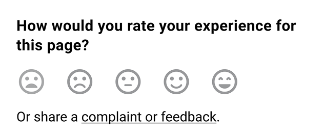
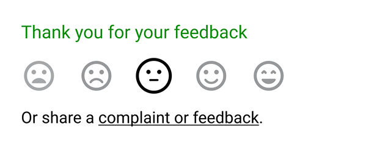
Concept 2: Emoticon scale with labels
Located below content on the page
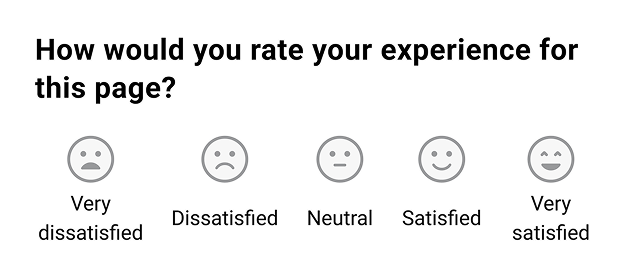
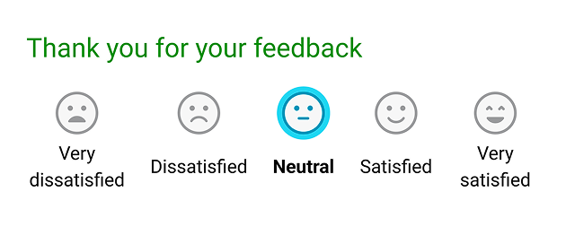
Concept 3: Toolbar
Single button below content on page
Additional button in the toolbar
Both open toolbar revealing emoticon scale and submit button
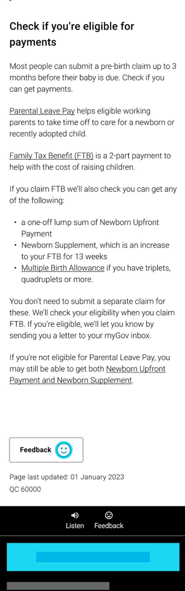
Mobile: in-page
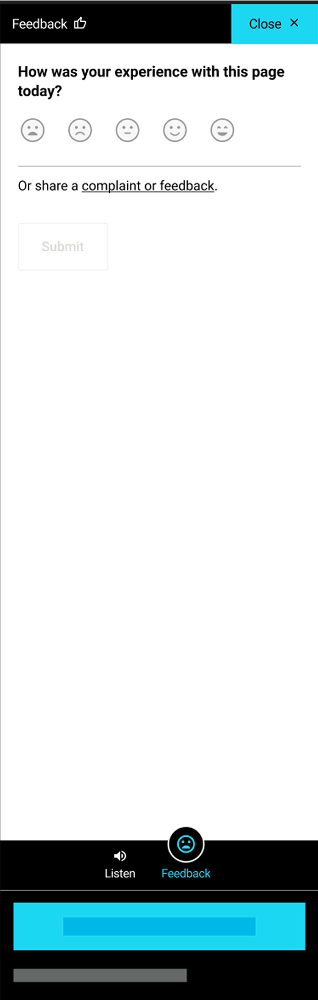
Mobile: default
Mobile: pressed
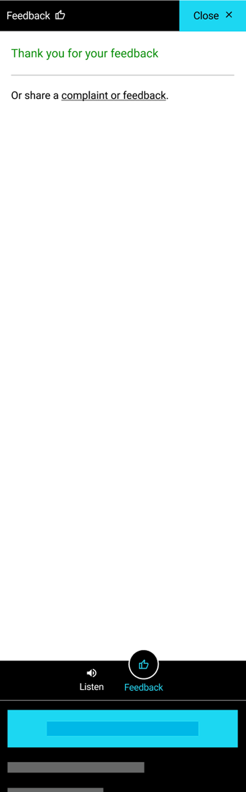
Mobile: confirmation state
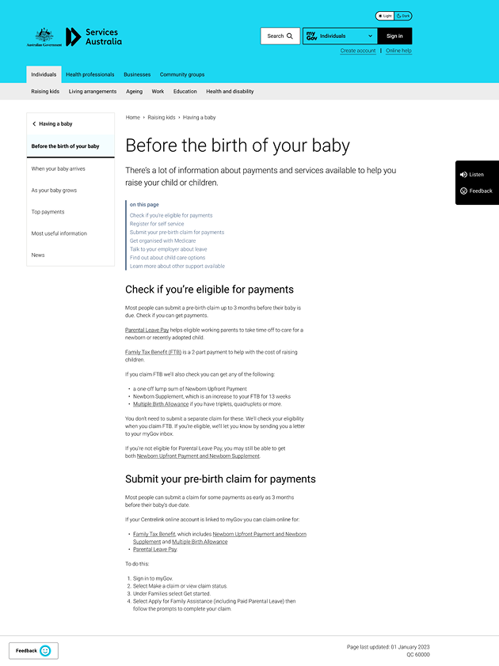
Desktop: in-page
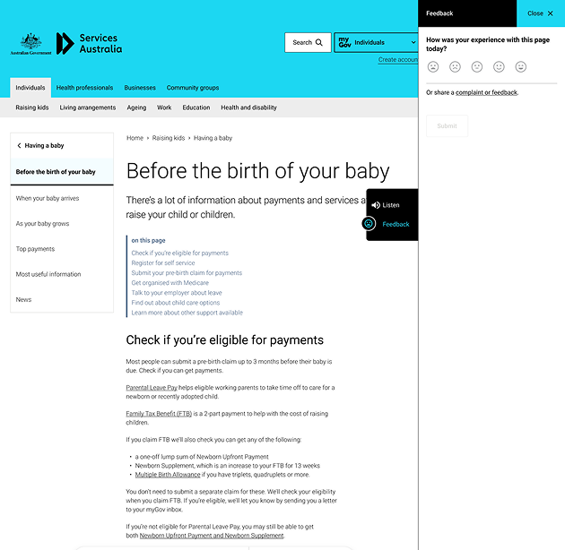
Desktop: default
Baseline (live site)
Yes/No buttons below content on the scale
Testing
The study evaluated participants' responses to three proposed Page Poll concepts and the existing design, focusing on visual appeal, ease of use, and clarity of the feedback question.
The aim was to identify which approach best supported user comprehension and engagement, informing future design improvements.
| Detail | Description |
|---|---|
| Method | Unmoderated online testing |
| Participants | 120 (15 per test) |
| Formats | Desktop and mobile |
| Prototypes | 3 new concepts and existing baseline |
Findings
1.Concept preference
-
•
Concept 2 received the strongest preference across both desktop and mobile participants.
-
•
Emoji-based concepts performed better than alternative representations.
2. Usability and comprehension
-
•
Participants valued the simplicity and ease of providing feedback.
-
•
Labels alongside emojis helped communicate their meaning.
-
•
Clear confirmation states reassured participants that their feedback had been submitted.
-
•
The approachable visual language encouraged participation.
3. Opportunities for improvememnt
-
•
Some participants felt emojis weren't appropriate for describing functional issues.
-
•
Participants expressed interest in providing additional detail.
-
•
The toolbar-based concept was perceived as disruptive, introducing unnecessary interaction steps.
Next steps
| Finding | Design implication |
|---|---|
| Strong preference for Concept 2 | Prioritise the labelled emoji scale |
| Toolbar interaction felt disruptive | Avoid unnecessary pop-ups and additional steps |
| Feedback scope needed clarification | Refine the question wording |
| Participants wanted more detailed feedback | Revisit additional feedback options in a future phase |
Changes before A/B test
Colour adjustments
Changed colours to accommodate dark mode and retain cultural sensitivity
Submission behaviour
Hid page poll after input and showed a feedback successfully input screen. This was done to prevent multiple inputs from the same user, along with avoiding making the complaints and feedback link a focal point since it is only accessible after adding initial feedback.
Illustrative icon
Created an illustrative icon (known as a ‘meeple’) as an additional cue.
A/B test
The hypothesis was that replacing the binary response with a five-point emoji-based scale would increase participation and provide more nuanced insights into page usefulness.
The redesigned component was subsequently implemented on the live website. However, I did not have access to the A/B testing results, so I cannot attribute the implementation to a measured improvement in performance.
Results and reflection
Results
The redesigned Page Poll was implemented on the Services Australia website, replacing the previous binary response with a five-point sentiment scale.
The new design established a foundation for capturing more nuanced feedback and provided an opportunity to explore additional feedback metrics in future iterations.
What I learned
1. Designing within constraints
I gained experience designing creative solutions within existing design guidelines, accessibility requirements and practical constraints.
2.Balancing fidelity and iteration
I learned that streamlining the low-fidelity to high fidelity pipeline is viable when dealing with established styles and tight deadlines. Under guidance from the senior designer, who highlighted that users struggle looking past the unfinished nature of a low-fidelity prototype.
3. Communicating design decisions
What challenged me was the initial expected volume output for early ideation and research. I also had to learn how to tidy my designs for presenting and ensuring the rationale behind each inclusion was coherent.